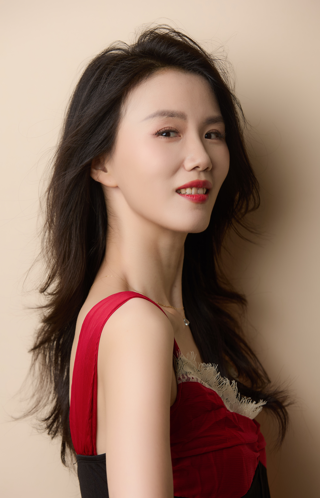
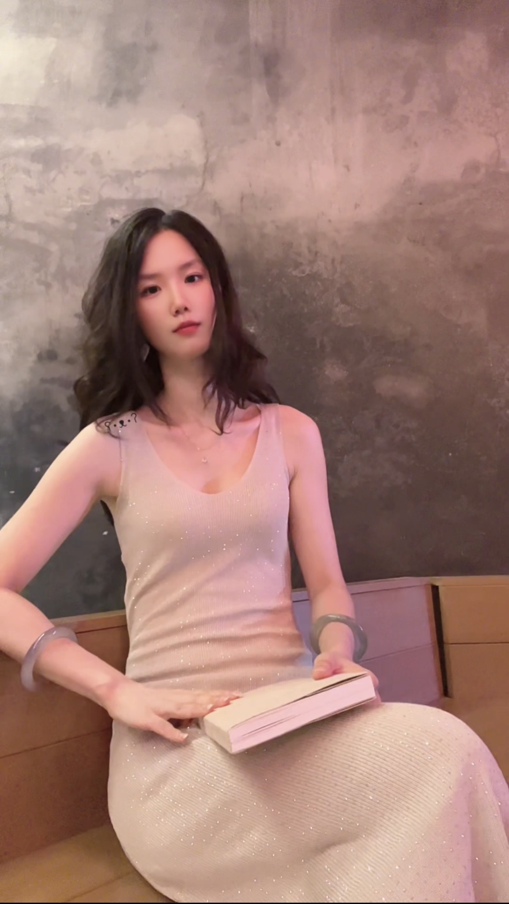

曹方石
曹方石


剧本创作
2026年1月曹方石改编其第一篇原创短篇小说《消失的情人》为同名电影剧本，首次在电影主创人员中担任编剧，2026年9月通过国家电影局备案，独特的多元化视角，让其创作兼具商业落地逻辑、社会价值与现实主义人文厚度。
小说创作
先后在起点读书网发表短篇小说：
- 《我在西汉当特工之中令大人的委派》（2024年1月）
- 《一个追我的富商朋友》（2025年1月）
- 《诡事录之石磨仙》 （2025年3月）
- 《5000平密室别墅案》（2026年8月）
国际论文
- 1. Fangshi Cao, . (曹方石) . (2026). Top-Down Systemic Metabolic Suppression Induced by Positive Temporal Lobe Variants: A Hypothesis on Temporal-Hypothalamic Axis Tuning and Low-Entropy Somatic Self-Maintenance Based on a Paradoxical Highly Sensitive Person (HSP) Phenotype Proband. Zenodo. https://doi.org/10.5281/zenodo.20545172
- 2. Fangshi Cao, . 曹方石 . (2026). Top‑Down Neuro‑Reproductive Suppression Induced by Positive Temporal Lobe Variants: A Hypothesis on Maternal Mitochondrial Inheritance and Negative‑Entropic Self‑Maintenance Based on a Rare Longitudinal Genius‑Phenotype Pedigree. Zenodo. https://doi.org/10.5281/zenodo.20374278
- 3. Cao Fangshi, . (曹方石) . (2026). The Recursive Reciprocal Positive Feedback Theory of Scientific Insight: From Unconscious Integration to Conscious Verification and Meta-Conscious Monitoring. Zenodo. https://doi.org/10.5281/zenodo.20612289
- 4. Fangshi Cao, . (曹方石) . (2026). Neural Sensitivity: A Hypothesis for Understanding Autonomic Dysfunction Across Co-Occurring Somatic, Neuropsychiatric, Vascular, and Ocular Symptoms. Zenodo. https://doi.org/10.5281/zenodo.20611510
- 5. Cao Fangshi, . (曹方石) . (2026). A Newly Identified Deep-Sleep Dream Phenotype: Stable World Modeling, Persistent Spatial Maps, and Extraordinary Dream-to-Literature Creativity. Zenodo. https://doi.org/10.5281/zenodo.20612881
- 6. Fangshi Cao, . (曹方石) . (2026). Local Fixed-Point Rigid Deep Pressure Stimulation, Body Fat-Related Somatosensory Differences and Sleep Optimization: A Theoretical Hypothesis Based on Spontaneous Intrauterine Biomechanical Sleeping Posture Replication. Zenodo. https://doi.org/10.5281/zenodo.21325824
- 7. Fangshi Cao, . (曹方石) . (2026). A Physiological Pathway Model: A Hypothesis Linking Temporolimbic‑System Hyperactivity, Dopaminergic Hypersensitivity, Compensatory REM Prolongation and Innate Long‑Sleep Requirement in an HSP Individual. Zenodo. https://doi.org/10.5281/zenodo.22059182
- 8. Fangshi Cao, . (曹方石) . (2026). A Whole-Life-Cycle Adipocyte Set-Point Hypothesis: A Staged Weight-Management Model. Zenodo. https://doi.org/10.5281/zenodo.22678337
- 9. Fangshi Cao, . (曹方石) . (2026). Hypothesis: Loss of TRPV1 Function Synergizes with Sodium Channel Polymorphisms to Induce "Numbness without Analgesia" via Atypical Differential Block and Nociceptive Escape: Implications for Perioperative Risk Assessment. Zenodo. https://doi.org/10.5281/zenodo.22775544
- 10. Fangshi Cao，.（曹方石）.（2026）. Hypothesis：Seasonal Autonomic-Vascular Dysregulation and Metabolic Advantage in a Highly Suspected TRPV1 Loss-of-Function Variant Carrier. Zenodo. https://doi.org/10.5281/zenodo.23413818
格言
步学术孤途，立无人之境，绘前沿空白领域下的延长线+辅助线
创作的诗
笔下风云即庙堂，遗世独立槛外姝。
太极华盖千秋贵，文昌文曲挑大梁。
最喜欢的古诗
《别董大》
千里黄云白日曛，北风吹雁雪纷纷。
莫愁前路无知己，天下谁人不识君。
最喜欢的现代诗
《无题》
忽闻故人心上过，回首山河已是秋。
他朝若是同淋雪，此生也算共白头。